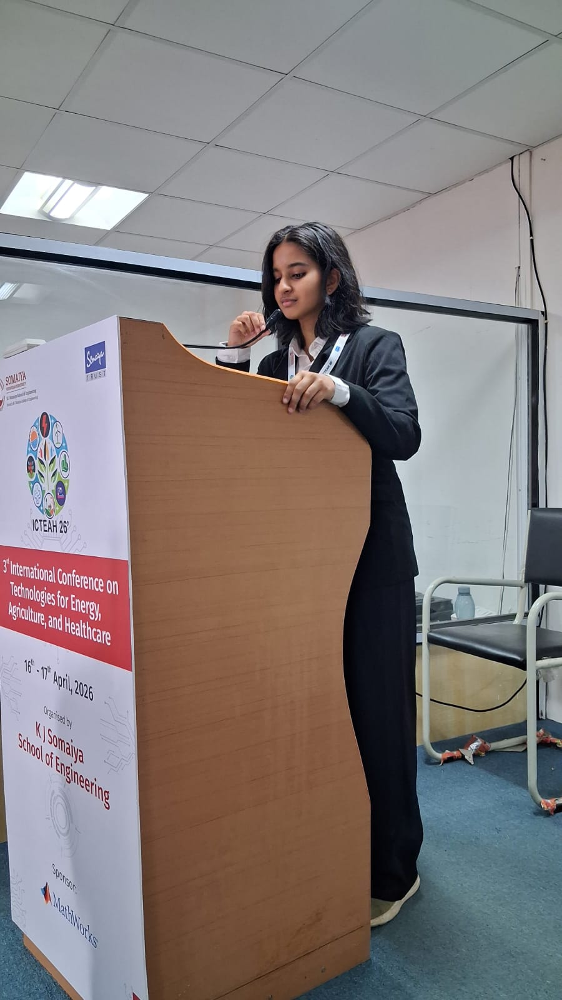

AI/ML Engineer · Computer Vision Specialist · Full-Stack Developer
Final-year B.Tech student specializing in Cybersecurity & Forensics. Passionate about building impactful solutions using AI, ML, and modern web technologies.

I'm a final-year B.Tech Computer Science student at KJ Somaiya College of Engineering (Vidyavihar), specializing in Cybersecurity & Forensics. Highly motivated to learn, eager to collaborate on impactful projects, and committed to continuous growth in the technology space.
With hands-on experience in Computer Vision, Machine Learning, and Full-Stack Development, I've worked on diverse projects ranging from aviation incident investigation to travel planning and healthcare support platforms. Particularly interested in offline RAG systems, object detection, and building secure, scalable applications.
Current CGPA
Projects
Publications
Internships
Honours in Cybersecurity & Forensics
KJ Somaiya College of Engineering, Mumbai
The Somaiya School
Podar International School
VNV Consultants
December 2025 – Present
TMRT Lab
July 2024 – September 2025
ATLAS SkillTech University
May 2022 – June 2022 · On-site, Mumbai
AI-powered platform focused on banking complaint resolution and intelligent support workflows.
Phishing detection and prevention using ML-based analysis of URLs and email content for real-time threat identification.
Evolutionary architectural analysis across YOLOv1–YOLOv12 for dense object detection performance.
Agentic AI-based travel assistant for group budgeting, expense tracking, and intelligent settlements.
Security Operations Center dashboard with SIEM integration for real-time threat detection and incident response.
Web-based iOS home screen theme designer with real-time preview and drag-and-drop customization.
Smart India Hackathon project work focused on practical solutions with measurable impact.
Computer vision model for classifying skin conditions using training pipelines and evaluation workflows.
Blue-themed information and analytics project around marine species and ocean conservation.
Agentic AI-based fintech travel assistant for group budgeting, expense tracking, and trip planning with intelligent settlements.
MumbaiHacks — Round 2 (Dec 2025)
Healthcare support platform for Kerala migrant workers with multilingual support and community-driven assistance.
Smart India Hackathon 2025 — Internal Rounds Cleared
Security Operations Center dashboard with SIEM integration for real-time threat detection and incident response.
YOLOv8-based skin condition classification system deployed for PhD research with automated dataset pipelines.
Phishing detection and prevention tool leveraging ML-based URL and email analysis for real-time threat identification.
Gen-AI powered unified customer complaint dashboard for banking. Automates complaint analysis, categorization, SLA tracking, escalation management, and intelligent resolution support.
Web-based tool to design and preview iOS home screen themes with real-time customization, drag-and-drop icons and widgets.
Dynamic marine species database with blue-themed responsive design, search & filters, species videos, and user feedback.
Vision-based structural injury risk prediction system for indoor climbing routes using ML models.
Published — Taylor & Francis 2026
A comprehensive framework for cleaning healthcare data and detecting clinical anomalies using incremental learning approaches.
Comprehensive analysis of YOLO architecture evolution (v1–v12) and its applications in agricultural precision detection.
Application of computer vision and machine learning for predicting structural risks in indoor climbing routes.
May 2025
Cleared internal rounds with SwasthyaSetu — a healthcare-support app for Kerala migrant workers.
December 2025
Advanced to Round 2 with PocketTrip — an Agentic AI fintech travel assistant for group budgeting and expense tracking.
2026 · Dharwad
Built Flight Investigator — an AI-powered FDR/CVR analysis system using RAG for aviation incident investigation.
Because life isn't just about commits and pull requests.
I love bouldering to the point you'll catch me climbing random objects. Don't leave me near a wall.
Participated in the All India University games, Somaiya Club MFA, and college-level football.
NCC cadet who represented Mumbai at the National Level White Water Rafting camp in Dandeli. Adrenaline? Yes please.
Running marathons for the love of endurance, discipline, and that post-run feeling that no coffee can replicate.
I'm always open to new projects, collaborations, and opportunities. Reach out through any of these channels.